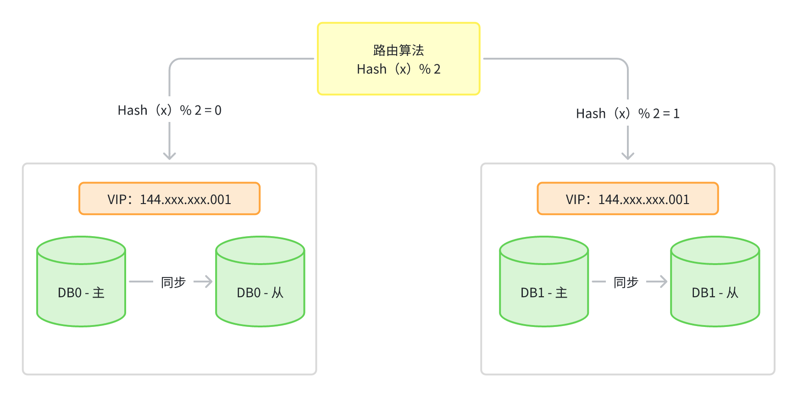
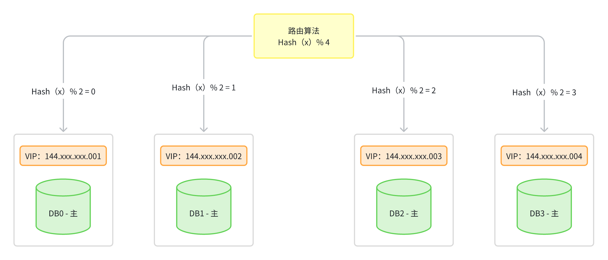
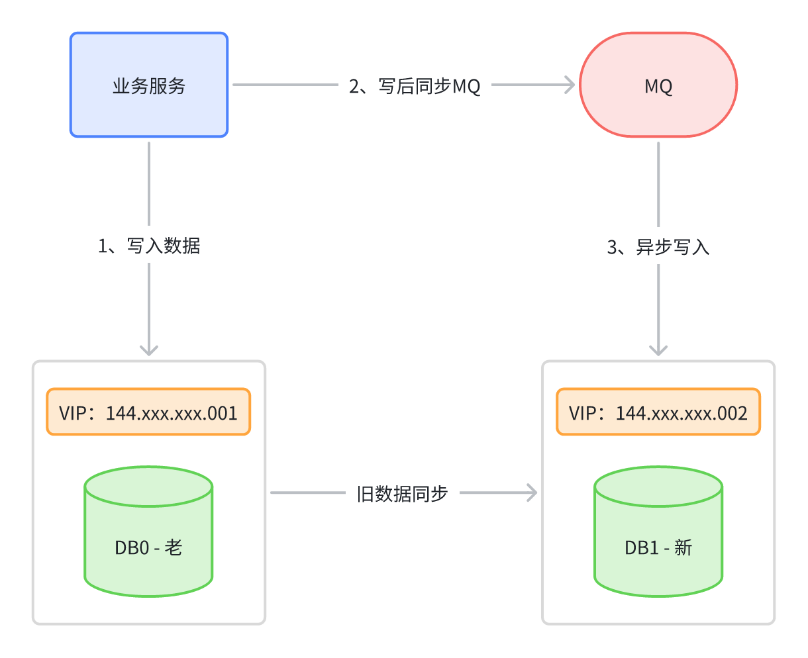
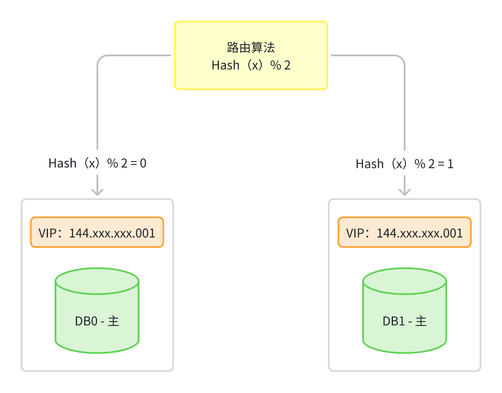

数据库-平滑的节点扩容方案
数据库-平滑的节点扩容方案
背景
众所周知，数据库很容易成为应用系统的瓶颈。单节点数据库的资源和处理能力有限，在高并发的分布式系统中往往会成为整个业务系统的性能瓶颈，此时可考虑采用分库分表突破单节点局限。本文来探讨下数据库节点的平滑扩容方案。
节点扩容
什么是节点扩容
数据库扩容一般是指水平分库，也就是当一个业务库无法承载流量压力时，需要对相应的业务拓展数据库的节点数量，但扩容时必须要考虑本次增加节点会不会影响之前的业务数据，因为很多情况下，当数据库节点的数量发生改变时，往往会影响数据分片的路由规则，从而影响数据的读写，这时就要考虑扩容是否会影响原本的路由规则。
数据库扩容一般都是基于水平分库的基础上，进一步对水平库做节点扩容，目前业内有两种主流做法：水平双倍扩容法、异步双写扩容法。
节点扩容的方案
传统的双倍扩容法
如果增加的节点数和扩容操作没有规划，那么绝大部分数据所属的分片都有变化，需要在分片间迁移，整体的迁移步骤大致如下：
- 预估迁移耗时，发布停服公告；
- 停服(用户无法使用服务)，使用事先准备的迁移脚本，进行数据迁移；
- 修改为新的分片规则；
- 启动服务器。
水平双倍扩容法
想要使用双倍扩容法对节点进行扩容，首先必须要求原先节点数为2的整数倍，同时路由规则必须要为数值取模法、或Hash取模法，否则依旧会造成扩容难度直线提升。同时双倍扩容法还有一种进阶做法，被称之为从库升级法，也就是给原本每个节点都配置一个从库，然后同步主节点的所有数据，当需要扩容时仅需将从库升级为主节点即可，过程如下：
起初某个业务的水平库节点数量为2，因此业务服务中的数据源配置为{DB0:144.xxx.xxx.001、DB1:144.xxx.xxx.002}，当读写数据时，如果路由键经哈希取模运算后的结果为0，则将对应请求落到DB0处理，如若取模结果为1，则将数据落到DB1中处理，此时两节点的数据如下：
- DB0：{2、4、6、8、10、12、14、16…..}
- DB1：{1、3、5、7、9、11、13、15……}
同时DB0、DB1两个节点都各有一个从节点，从节点会同步各自主节点的所有数据，此时假设两个节点无法处理请求压力时，需要进一步对水平库做扩容，这时可直接将从节点升级为主节点，过程如下：
经过扩容之后，节点数量变成了4，所以首先得修改业务服务中的数据源配置为{DB0:144.xxx.xxx.001、DB1:144.xxx.xxx.002}、{DB2:144.xxx.xxx.003、DB3:144.xxx.xxx.004}，然后将路由算法修改为%4，最终数据分片如下：
- DB0：{4, 8, 12, 16, 20, 24…..}
- DB1：{1, 5, 9, 13, 17, 21……}
- DB2：{2, 6, 10, 14, 18, 22…..}
- DB3：{3, 7, 11, 15, 19, 23…..}
此时要注意，因为DB2原本属于DB0的从库，所以具备原本DB0的所有数据，现在再观察上述的数据分片情况，对比如下：
- 扩容后的DB2：{2, 6, 10, 14, 18, 22…..}
- 扩容前的DB0：{2、4、6、8、10、12、14、16…..}
此时大家应该会发现，扩容后DB2中落入的分片数据，原本都是存在于DB0中的，而DB2原先就是DB0的从库，所以也具备之前DB0中数据，因此采用这种扩容法，基本上无需做数据迁移！
好比现在要查询ID=10的数据，根据原本
Hash(XX)%2的路由算法，会落入到DB0中读取数据，而根据现在Hash(XX)%4的路由算法，应该落入到DB2中读取数据，因为DB2具备原本DB0的数据，所以也无需在扩容后，再次从DB0中将数据迁移过来（DB1、DB3亦是同理）
为了不占用存储空间，也可以在凌晨业务低峰期，去跑脚本删除重复的数据，因为目前DB0、DB2之间在迁移之前的历史数据完全相同，都包含了对方要负责的分片数据，所以在跑脚本的时候就是要从自身库中删除对方的数据（DB1、DB3亦是同理）。
当然，如果你感觉这种做法太浪费机器，也可以使用传统的双倍扩容法，即每次扩容之后，要手动从原本的库中将分片数据迁移过来，如果数据量较大时，迁移数据的时间会较长，所以只能做离线迁移。同时在离线迁移的过程中，线上数据还有可能发生变更，所以离线迁移后还需要核对数据的一致性，过程会更繁琐一些，所以省机器还是省麻烦，需要在两者之间做抉择。
异步双写扩容法
前面聊到的水平双倍扩容法，仅仅只是扩容时的一种方案，除此之外还有另一种方案称之为异步双写扩容法，大体示意图如下：
对于需要扩容时的情况，首先依旧把新的数据写入到老库中，然后写完之后同步给MQ一份，后续再由MQ的消费者去将新数据写到新库中，同时新库在这期间，会去同步老库中原有的数据，这个动作持续到所有旧数据全部同步完成后，再以老库作为校验基准，核对数据无误后，再将模式切换为扩容后的分库模式。
切换到分库模式后，记得在业务代码中去掉双写的逻辑，改为路由分片的逻辑，稍微总结一下整个流程，如下：
- 第一步：修改应用服务代码，加上MQ双写方案，配置新库同步老库数据，然后部署。
- 第二步：等待新库同步复制老库中所有老数据，期间新写入的数据也会通过MQ写入新库。
- 第三步：老库中的所有老数据全部同步完成后，以老库作为校验基准，校对新库中的数据。
- 第四步：校对新老库之间的数据无误后，修改应用配置和代码，将双写改为路由分片，再次部署。
这两种方案都是分库分表扩容时最常用的方案，但异步双写扩容法，更适用于垂直分库后的第一次单节点扩容。而水平双倍扩容法，则适用于水平分库后的第N次扩容。
参考文档：
 微信
微信